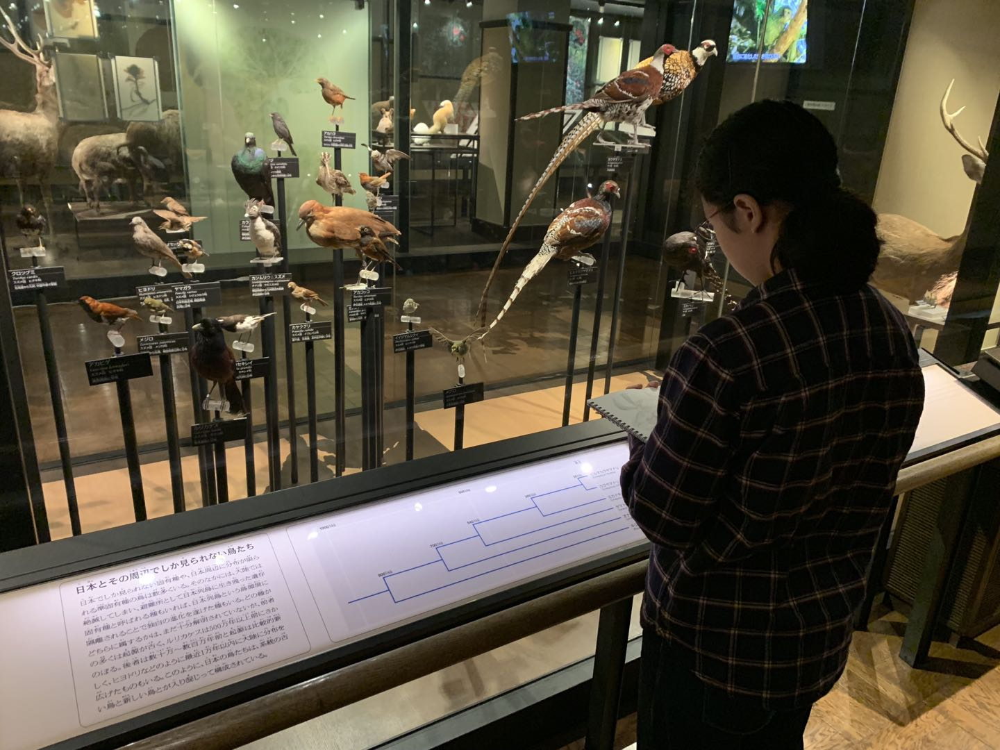
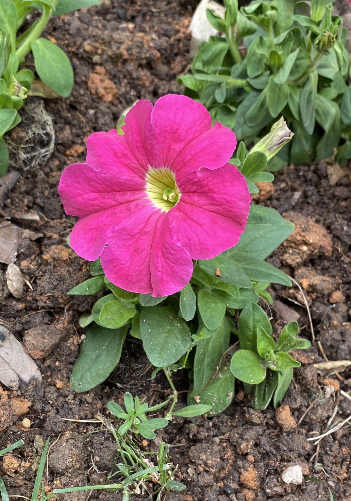
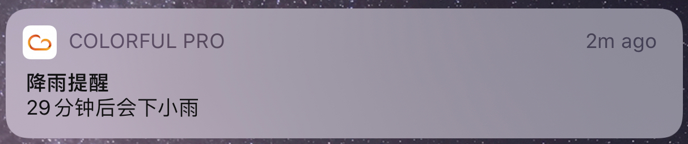
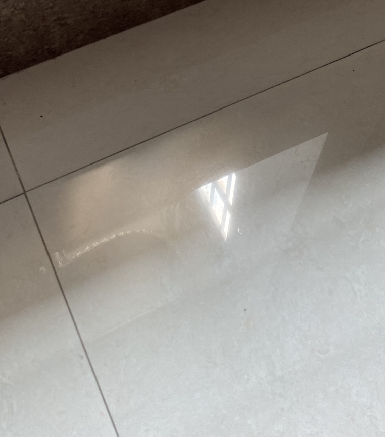
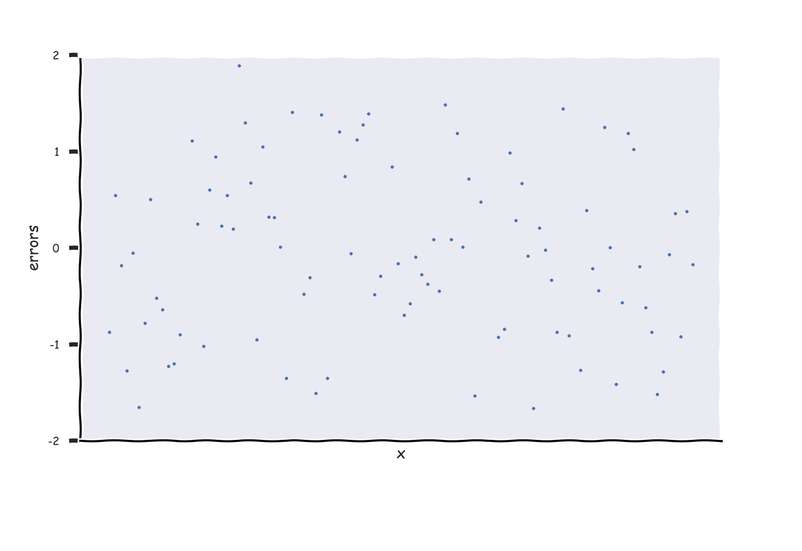

朝顔
如果你想说，那我就在听．
几件小事．
- 中午出门看到有些中学生上学了．
- 第二次剪了头发你还没开学．
- 5月3日就100天了．うれしいはずだったのに、只是我还没想好我应该怎样面对你．
- 电脑拿去修了，这一周不能写了．
对了，陌生人剪的头一样的丑．
以后我都不想再跟你吵了，丽华．我喜欢你，你不喜欢我也好，不能喜欢我也好，信息回也好，晚点回也好，不回也好……不回不太好……最终怎样也好，大家都说清楚过了．不想再吵，更不想伤害我们仅有的一点点感情．至少对我来说，有时间再吵，不如只争朝夕．
今天去上次给你拍花的公园逛了一圈．
第一感觉就是，最大的变化，就是上次开得那么灿烂的黄铃木，已经彻彻底底地枯萎了．一身的树叶已经全变成了黄褐色，一点绿也不留．树叶并没有完全落下，大多数是垂直地悬挂在树枝上，远看还有点像你之前说的皂角树．这种花花期真是短暂，就算算上长叶的时节．什么时候能和你一起看花呢，哪怕只是路边的．
一切就这么样的春去秋来，任凭欢笑还是苦闷．
在那以后，其实我每天都不知道在想啥．唯独就是纠结能不能跟你说话这件事，一直没变过．
中间哪一天开始，我去买了两个酥皮面包，接下来的每天，我都去买了两个酥皮面包．放在桌子的时候，我有时会对着它（们）发呆．不知道它们会不会说话．放到晚上，会吃掉一个，然后另一个放到第二天起来再吃掉．
每天都吃酥皮的人，大概是无趣的人吧．
今天第二次很用力地看完了《我的故事说来话长》．
对我来说，我觉得它是2019年最好看的日剧了．不知道什么时候开始这种喜欢平平淡淡无聊甚至有点枯燥的日常剧．看过的电视剧里似乎没有很多是讲述日常的故事的．上一次跟你说的《我和她和她的生存之道》也不是算是很日常吧……应该．
看吧，我是个无趣的人．我是个可以一天不说话的人，但总想找你说话．
只能说，加油，默默地．
去了一趟博物馆．其实我对博物馆没有太大的执念，虽然小时候也去过几次，还有航空馆啊，水族馆啊、科学馆啊……之类．想起上一次去的时候应该是前年去日本的时候了．第一天的时候我去了上野公园．那是一个会出现在日语课本上的公园，应该算国民级别了，春天的赏樱圣地．上野恩赐公园的樱花🌸，我觉得你一定会喜欢．比你头像里的还要好看．那里也有一个博物馆．印象深刻的是看到有几个学生在那里认真地画着里面的展品．我好像只在电视里看过这种景象．

我就在旁边静静地看她们画了一会儿．
出来之后，一直走在公园里，再次让我有所触动的是有数不尽的学生团队由老师带着队在公园里做着各种活动．从小学，初中到高中．我已经不记得我小学之后有没有去过公园了，也不曾想去长大后有没有在公园里看到过我们这边的学生．开始我以为只有出名的公园才会那样，后来的几天，在大大小小的公园里，都能看到小学生、初中生和高中生自由地玩耍，这种学生生活真的让人羡慕．后来去到大阪的时候，看到几个高中生在玩扔球游戏，就两个人站了好几十米，你扔我接那样……看着都觉得无聊．但是，这一种无聊和欢笑，跟电视里看到的居然一模一样．
明天要加油．
今天溜一了圈，看到这个不知名妖艳小花．

好像没怎样见过这样的“小花”．长在地上的，叶子却那么多，就那么独立地一朵地长着．多数花好像都长在一起，一枝上也有很多朵那种．不知道你见过没有．也像小孩子（我）画的那种花，一朵花，两片叶．
这两天好闷热，你应该也有去跑步吧．我走了一下就要出汗了．早上看天气预报还说会下雨结果没下．
这首纯音乐是以前打游戏的时候很喜欢听的．中文名就是“晚安，那维克”．以前在游戏的夜晚里会无聊地坐在游戏里的城市海边，然后听着这首歌，仿佛自己在游戏里，看着那的海，听着那一份宁静．
深夜，确实很宁静．有时会陷在睁开着眼睛，但眼前是一片黑暗的这种氛围里．
我觉得这个世界最不可理喻的事情就是，刚认识的时候可以无所不谈，等成为了“朋友”之后，反而要有所顾忌……
去越南的时候第一次吃汽水盖刮出来的椰丝．是放在一种薄饼里吃的．我觉得你可能也会喜欢吃．
[deleted]
昨晚做了很多梦，记得的只有两个．一是去打球的地方不用测体温了．二是你跟我说晚安．
兄你个头．这么说可能有点晦气，但是，你开心就好．
不发表情，不加标点，这样会不会能显得我比较冷淡．
很想找你，又怕情绪传染．快疯了．我不绝望，只接受失望．之前或许太想我们有结果，现在我想珍惜这个过程．结果，就让它只是个结果吧．
努力做个能给你带来快乐的人．
14:17，发呆中．
上一个14日，我们在谈北海道的巧克力．
现在好想跟你说话却不敢跟你说话．
这个月份的礼物： （后来发现这张图被覆盖了！）

欲言又止的无力感．
今天起来，感觉有一点像秋天．天很蓝，凉凉的，不是很冷．偶尔会突然打一个冷战寒颤．
不过我还是在家里呆了一天．傍晚的时候到楼下走了一走，用力吸了一口．是秋天的感觉，空气流入鼻腔里，感觉到一丝干燥．
才和谁走过了春天，还会有秋天吗？
感觉我能做的就是，从缩短发信息的频率与减少字数开始呢．
这几天都没上班，一直在想这日子怎样过．
早上去练了一下球，又被教练说了．
原来每天也只有10点的30分钟，为什么感觉会相差那么大呢．
她看过来，我应该比较好笑吧．也不知道在为一个素未谋面的人纠结什么吧．说想她，应该会被笑吧．
她看过来，就萍水相逢，过两天就可以把我这污点抹掉吧．
我好喜欢她．好喜欢．好想她．却不能跟她说话，告诉她我想她．或者只跟她说说话．没想到这么抗拒．虽然我也有不喜欢她的地方．
比如，每次不小心说了"可能"就生怕我有希望一样，马上改口"不能"．
比如，说顺其自然，内心里一直一直一直提醒着自己一点一点一点也不能跟我发生点什么，生怕我会误会．我一点儿也没有误会．Nothing changes. Yesterday. Today. Tomorror.
觉得，这样我就会跟她说，谢谢你的绝情让我学会死心？
说啥呢．剩下我自言自语．
她你高兴就好．
是很晦气，这句话．
但我能怎样．我能怎样．我想她高兴，那只能委屈一下我自己．
让她变得这么抗拒，很对不起．
不到一周前我们还在聊小时候吃的东西和好吃的客家丸子．
我没啥想说的了．都说过了．唯独一个，
我就问一句，如果当天你没问你父母，今天会变成这样吗？
如果是我的回答，我的答案是100%不会．不是因为别的，而是因为我相信那时的我和你．
啊！我怀疑我以前不是那样容易有情绪波动的．虽然也不是大大咧咧．究竟是被牵动了，还是矫情．
我只想做个什么时候看到你眼睛都能发光的男孩．
特别怀念能够随时给你发信息的日子．
特别怀念你什么都愿意跟我说的日子．
不知道你PPT做得怎样了，加油！阳光与我，都在等你．
现在是17点27分07秒，天气预报说29分之后会下雨．差不多到你运动的时候了吧，不过今天又不能跑步了诶．

半夜下起了雨来，有时淅沥淅沥可以助眠，有时滴答滴答也会助长失眠．你这么易醒，不知道会不会被这雨声吵醒呢？
根据总字数与平均句长，目测今天又没机会和你说话了hah……😢又是漫长的一天．
清明节11点42分28秒，出了一点太阳了，不知道你有没有看到．

今天，要缅怀的，有很多．
晚安啦．
今天看到这个，倒不是觉得说她有说得多有道理，而且也只是N个有好有差的回答正好出现在我的timeline里的，当然也不是说她没有道理．只是单纯好奇你会怎样想呢，虽然我们也 没到 不在这种阶段……
有点尴尬哈哈．仿佛我（有？曾经？）都擦到边了．
有时候我不往上面看（也很少往上面看），会偶尔会忘记自己做过什么蠢事（我所（能）做的确实很廉价）．那里面的，被你撩动过，拒绝过，分享过，逗乐过，躲避过，回避过……细想起来，中间事情还真不少（虽然再多也多不过聊天记录里的）．心里最大的触动总是不会忘记，想起来了，心情就会自然而然地代入．对我来说，说得悲观一点就是，这一切都在变着呢！有天你不会再察觉我的喜欢，有天你会不再习惯我的存在，有天你也会不再需要我的存在（或许本来就不需要）……我喜欢的心情，大概也像服从正态分布随机误差一样，在均值上下几个标准差里不时变化着，那些蠢事就是这几个标准差里上上下下的好好坏坏的印记．（我后来才发现，这个比较极其不恰当！因为随机误差的均值为0，而我的那个心情不是！）

我以为是在表达自己的情感，或许别人看来就是证明自己．
就算这样，还是想跟你说晚安．
前几天看你朋友圈的时候，还能看到在北海道领证书的那里，😢今天一刷就看不到了～
天气总是阴沉，但你可以是一道阳光．😘
今天愚人节诶．（😂也是我认识你之后的第一个愚人节诶！）
😈昨晚我在想可以怎样捉弄一下你，不过想了一晚都没有想出来．后来又想了一下，😅愚人节好像不适合你的画风……而且，最近的你都要忙翻天，要是捉弄一下我怕不是要被打死……
时间也是过得飞快．正如上次跟你说的，以前开始，我就想每天都争取过得一点不一样．倒不是因为我快要死了……只是觉得，以前的以前为啥就没有这样的觉悟呢．大概以前的以前也就不知道自己为啥而活吧．算不上行尸走肉，也不是说过得像机器一样，我也不知道怎样形容那里的自己．硬是要说的话，大概就是缺少一分灵气．譬如当你发现自己目光在看着这个世界的时候不再那么明亮，譬如在大多数时候把将要说出来的话默默地选择咽回去，然后一笑置之，譬如身边人身边事让你的兴奋点变得越来越高……这种灵气就在慢慢地消失吧．不管几岁，离起跑线一直都是越来越远，生理上心理上，总有一天开始淡化着对这个世界的感知，变得迟钝．开一个愚人节玩笑，遇到喜欢的人大声表白，碰到不如意的事尽情哭泣，而不是在黑夜里独立忧伤，更主动地去留意身边人身边事的变化，时时去触摸这个世界，去听嘀嘀嗒嗒的雨声，去看地上闪动着树叶的影子，去听风与树叶摩擦的声音，去看水池里嘎嘎嘎地叫的鸭子，换一条路回家……（对，我就是这么的无聊）其实生活不是那么的无聊枯燥，也可以更有温度．
可是，现实总是残酷的多．😠譬如，我现在还没想到该怎样捉弄你．